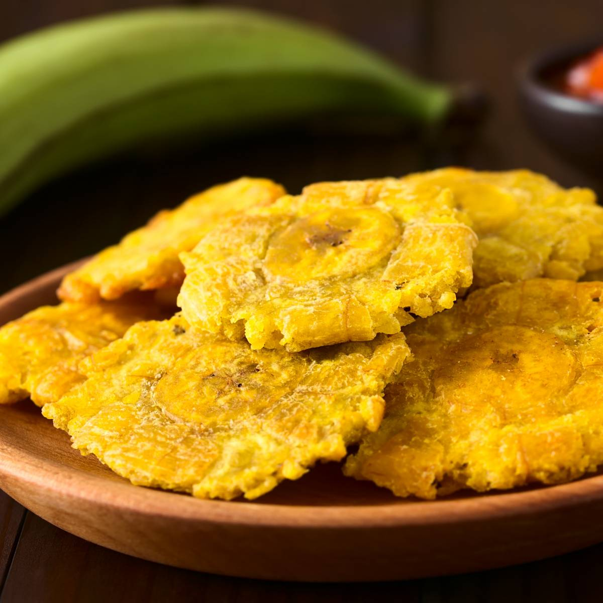

Tostones

Description
Tostones are crispy fried plantains. A plantain is a very firm banana. Serve as a side dish with your meal or as
an appetizer.
Ingredients
- 1 green plantain
- 5 tablespoons oil for frying
- 3 cups cold water
- salt to taste
Steps
- Peel plantain and cut into 1-inch slices. Fill a bowl with 3 cups cold water.
- Heat oil in a large deep skillet over medium-high heat; add plantain slices in an even layer and fry on both
sides until golden brown, about 3 1/2 minutes per side. Set skillet aside
- Transfer plantain slices to a chopping board; flatten each one by placing a small plate on top and pressing
down. Dip plantain slices in the cold water.
- Reheat oil in the skillet over medium heat; cook plantain slices for 1 minute on each side. Season to taste
with salt and serve immediately.